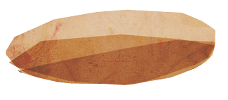

This page is a bit of fun written for the jQuery UK conference, Oxford 2012. The page runs a snippet of CoffeeScript code which we printed on a bunch of mugs for the conference.
Technically speaking, we use the mugorientation event to find when the mug's being tilted, and then remove any coffee that's been drunk. When all the coffee's gone we make a request to refill our coffee using the Hyper Text Coffee Pot Control Protocol.
If that doesn't work then we've probably got a 418 status code!